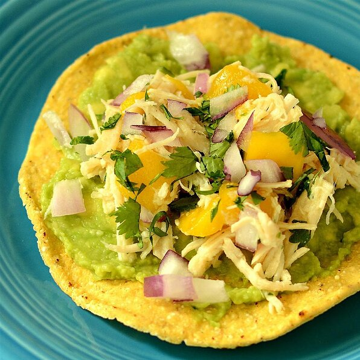

Tostadas

Description
A classic mexican tostada made with chicken, mango and spicy guacamole sauce
Ingredients
- 2 cups shredded cooked chicken
- 1 mango - peeled, seeded and diced
- 2 tablespoons minced red onion
- 1 tablespoon chopped fresh cilantro
- ½ jalapeno pepper, seeded and minced
- 2 limes, juiced, divided
- 2 tablespoons olive oil
- kosher salt to taste
- 2 ripe avocados - halved, pitted, and peeled
- 24 large corn tortilla chips
Steps
- Combine chicken, mango, onion, cilantro, and jalapeno together in a bowl. Drizzle the juice from 1 lime, olive oil, and kosher salt over the chicken mixture and mix.
- Mash avocados in a bowl with remaining juice from 1 lime and kosher salt to taste.
- Top each tortilla chip with a dollop of the avocado mixture and a dollop of the chicken mixture and place on a platter.